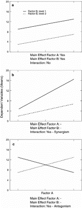
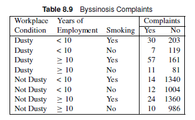
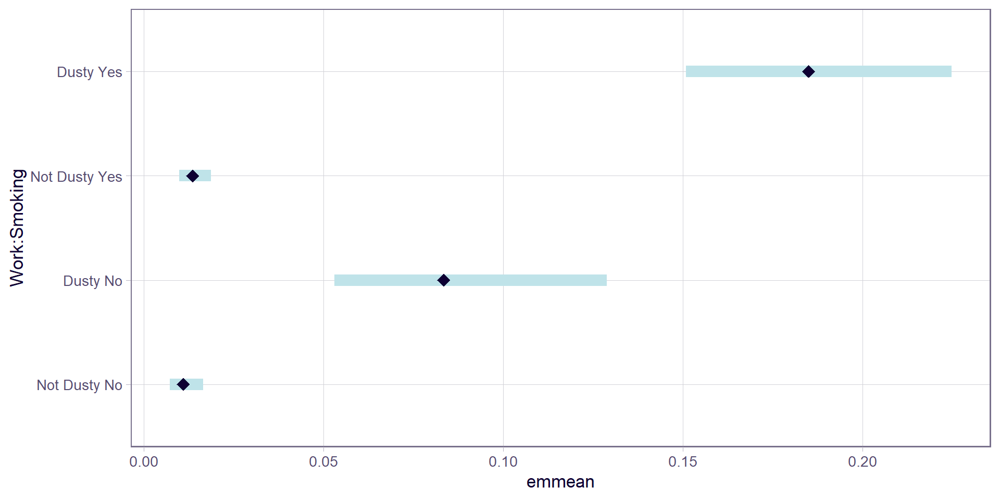
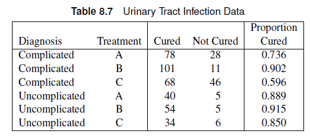
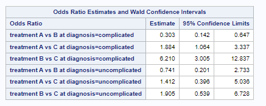
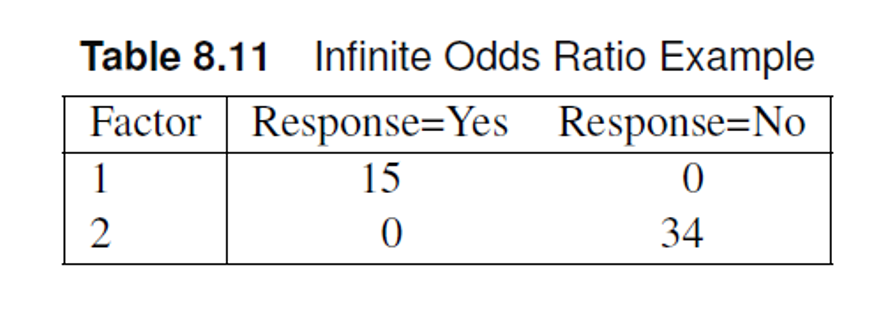

EAB 770 - Chapter 8
Chapter 8: Logistic Regression: Dichotomous Response
Outline
- Dichotomous Explanatory Variables
- Qualitative Explanatory Variables
- Continuous and Ordinal Explanatory Variables
- Diagnostics
- Likelihood methods
Review: Mantel-Haenszel Tests
Mantel-Haenszel statistics investigate association between two variables with adjustment for a stratification variable. - General association - Location shifts for means - Linear/increasing trends
Note
Mantel-Haenszel Tests do not involve statistical models, and therefore can’t be used for estimation for effect sizes or prediction. Furthermore, these tests cannot accommodate for continuous variables as predictors.
Logistic Regression
Statistical modeling method that enables us to make inferences, estimate/predict outcome variables, and describe the relationship between a categorical response variable and multiple explanatory variables. Possible applications include epidemiology, medical research, agronomy, and social science research.
Note
Continuous explanatory variables can be included in the analysis, unlike in Mantel-Haenszel tests. Responses can be dichotomous or polytomous (more than two levels).
Dichotomous Response
Logistic Regression: Model
Logistic regression enables us to write a model for the probability of success for each group.
Let \(\theta_{mi}\) be the probability of success of the \(i^{th}\) group in the \(m^{th}\) strata.The logistic model can be used to describe the variation among {\(\theta_{mi}\)}
\[ \theta_{mi} = \frac{1}{1+\exp[-\eta_{mi}]} \]
Logistic Regression: Model
Where
\[ \eta_{mi} = \alpha + \sum_{k=1}^t \beta_kx_{mik} \]
and \(t\) is the number of explanatory variables.
Note
\(\eta_{mi}\) is referred to as the linear predictor of the model.
Logistic Regression: Model
Using algebra, we can invert the equation to the following form:
\[ \eta_{mi} = \alpha + \sum_{k=1}^t \beta_kx_{mik} = \log\left[\frac{\theta_{mi}}{1-\theta_{mi}}\right] \]
Note
\(\log\left[\frac{\theta_{mi}}{1-\theta_{mi}}\right]\) is referred to as the logit transformation of \(\theta_{mi}\), which is the logarithm of the odds.
Other functions that can serve as a link function include the probit model and the complementary log-log model.
Odds and Odds Ratios
The odds of success for an individual in the \(m^{th}\) strata and \(i^{th}\) group can be calculated as
\[ \theta_{mi}/(1-\theta_{mi}) = e^{\eta_{mi}} \]
The odds ratio between the \(i^{th}\) and \(j^{th}\) group in the \(m^{th}\) strata can easily be calculated.
\[ OR = \frac{odds_{mj}}{odds_{mi}} = e^{\eta_{mj}}/e^{\eta_{mi}} = e^{\eta_{mj}-\eta_{mi}} \]
Advantages
- The logit transformation enables us to monitor the change in log odds.
- Easy to calculate odds ratio.
- The linear predictor can take on values from \((-\infty,\infty)\), but the values of \(\theta_{mi}\) will be constrained in [0,1].
Tip
If you used linear regression to model a proportion, it assumes that the response variable can be negative or above 1.
Fit Statistics
- The model performance can be measured using the deviance and goodness-of-fit statistics.
Note
Both use chi-square statistics to assess model fit.
Chi-square statistics
Note
Likelihood ratio chi-square measures the difference between two models by using the ratio of the two likelihoods as a chi-square statistic.
Note
Pearson chi-square goodness of fit uses observed and expected values to test for a goodness of fit.
Chi-square statistics
- If the chi-square statistic divided by the degrees of freedom is higher than one, then the data has some variation that is unaccounted for in the model.
- This is called overdispersion
- The high ratio between the chi-square statistic and degrees of freedom can also mean that the data does not follow a binomial distribution well.
- Heterogeneity
- Both cases are accounted for using generalized linear mixed models/generalized estimating equations.
Chi-square statistics: Sample Size
Sample size guidelines for the chi-square assumption for these fit statistics include:
- Each group should have at least ten subjects.
- 80% of the predicted counts should be at least 5.
- No 0 counts, remaining 20% of the counts should be above 2.
- Failure to satisfy these assumptions means exact tests should be used.
Chi-square statistics: Hypothesis Test
The null hypothesis for both deviance and goodness-of-fit tests is that the departures of the observed data from the predicted values based on the model are random.
Note
Failure to reject the null hypothesis means we have no evidence against good agreement between observed and predicted values based on the model.
Fit Statistics
The Akaike Infomation Criterion (AIC) and the Bayesian Information Criterion (BIC)/Schwarz Criterion (SC) can also be used to assess model fit. Lower values of these criteria indicate better model fit.
Note
AIC predicts estimation error based on the provided model. BIC also predicts estimation error but uses a different penalization scheme for errors.
The AIC (or BIC) for the full model (intercept + covariates) should be lower than the AIC (or BIC) of the intercept-only model if the covariates are associated with the response.
The Main Effect Model
Recall that the linear predictor can be written as:
\[ \eta_i = \beta_0 + \beta_1x_{i1} + \beta_2x_{i2} + ... \]
Note
\(\beta_0\) is the intercept of the linear model
Note
\(\beta_k\) are the coefficients of the explanatory variables. These coefficients will tell us the effect of predictor \(x_{ik}\).
The Main Effect Model
The current form of the linear predictor assumes the explanatory variables are in quantitative form. When the explanatory variables are categorical, we need to create dichotomous dummy variables to denote each level of the variables.
Note
The case \(x_{ik}=0\) is called the reference level of the variables. When all \(x_{ik}=0\) the linear predictor collapses to the intercept \(\beta_0\).
Note
For dummy dichotomous variables, odds ratios can be calculated as an effect size of association.
The Main Effect Model
Note
The main effect model follows a regression framework, which means we can use ANOVA to test for effect significance.
SAS: The LOGISTIC Procedure
The LOGISTIC procedure can perform logistic regression in SAS.
- Can take both categorical and continuous explanatory variable
- Syntax is slightly different from the FREQ procedure.
SAS: The LOGISTIC Procedure
The LOGISTIC procedure provides estimates for \(\beta\) as in regression analysis.
Sample Syntax
- 1
-
freqfunctions similar toweightin theFREQprocedure. When the data consists of an observation for each row, this statement is not needed. - 2
-
modelspecifies the model for the responseyusing the explanatory variablesx1andx2.eventtells SAS what the “success” response level is. Thescaleoption produces goodness-of-fit statistics. Theaggregateoption requests that SAS treat each unique combination of the explanatory variable values as a distinct group in computing the goodness-of-fit statistics.
R: glm()
The glm() function in R can fit a logistic regression model in the generalized linear model framework.
Note
Because there are other distributions that work with glm(), we need to specify that we are dealing with a binomial distribution using the family="binomial" argument.
R: Odds Ratios
We can use emmeans() and contrast() from the emmeans package to estimate the probabilities and odds ratios based on the model provided by the glm() function.
Example
The data shows people who visited a clinic and required a catheterization. The response is the presence of coronary artery disease. The explanatory variables are ECG segment depression and sex. Use logistic regression methods to obtain odds ratio estimates and create a logistic regression model to estimate the probability of developing CA disease based on sex and ECG segment depression.

Data Set
or refer to ECG.csv uploaded on Canvas. Sex=0 refers to female, while ECG=0 refers to lower segment depression.
Rows: 78
Columns: 4
$ ID <int> 1, 2, 3, 4, 5, 6, 7, 8, 9, 10, 11, 12, 13, 14, 15, 16, 17, 18,…
$ Sex <int> 0, 0, 0, 0, 0, 0, 0, 0, 0, 0, 0, 1, 1, 1, 1, 1, 1, 1, 1, 1, 0,…
$ ECG <int> 0, 0, 0, 0, 0, 0, 0, 0, 0, 0, 0, 0, 0, 0, 0, 0, 0, 0, 0, 0, 1,…
$ Disease <fct> No, No, No, No, No, No, No, No, No, No, No, No, No, No, No, No…Example
The data shows people who visited a clinic and required a catheterization. The response is the presence of coronary artery disease. The explanatory variables are ECG segment depression and sex. Use logistic regression methods to obtain odds ratio estimates and create a logistic regression model to estimate the probability of developing CA disease based on sex and ECG segment depression.
Analysis of Deviance Table
Model 1: Disease ~ 1
Model 2: Disease ~ Sex + ECG
Resid. Df Resid. Dev Df Deviance Pr(>Chi)
1 77 107.67
2 75 95.90 2 11.769 0.002782 **
---
Signif. codes: 0 '***' 0.001 '**' 0.01 '*' 0.05 '.' 0.1 ' ' 1
Call:
glm(formula = Disease ~ 1, family = "binomial", data = ecg)
Coefficients:
Estimate Std. Error z value Pr(>|z|)
(Intercept) 0.1542 0.2271 0.679 0.497
(Dispersion parameter for binomial family taken to be 1)
Null deviance: 107.67 on 77 degrees of freedom
Residual deviance: 107.67 on 77 degrees of freedom
AIC: 109.67
Number of Fisher Scoring iterations: 3
Call:
glm(formula = Disease ~ Sex + ECG, family = "binomial", data = ecg)
Coefficients:
Estimate Std. Error z value Pr(>|z|)
(Intercept) -1.1747 0.4854 -2.420 0.0155 *
Sex 1.2770 0.4980 2.564 0.0103 *
ECG 1.0545 0.4980 2.118 0.0342 *
---
Signif. codes: 0 '***' 0.001 '**' 0.01 '*' 0.05 '.' 0.1 ' ' 1
(Dispersion parameter for binomial family taken to be 1)
Null deviance: 107.67 on 77 degrees of freedom
Residual deviance: 95.90 on 75 degrees of freedom
AIC: 101.9
Number of Fisher Scoring iterations: 4 Sex prob SE df asymp.LCL asymp.UCL
0 0.344 0.0853 Inf 0.200 0.523
1 0.652 0.0740 Inf 0.497 0.781
Results are averaged over the levels of: ECG
Confidence level used: 0.95
Intervals are back-transformed from the logit scale contrast odds.ratio SE df asymp.LCL asymp.UCL null z.ratio p.value
Sex0 / Sex1 0.279 0.139 Inf 0.105 0.74 1 -2.564 0.0103
Results are averaged over the levels of: ECG
Confidence level used: 0.95
Intervals are back-transformed from the log odds ratio scale
Tests are performed on the log odds ratio scale contrast odds.ratio SE df asymp.LCL asymp.UCL null z.ratio p.value
Sex1 / Sex0 3.59 1.79 Inf 1.35 9.52 1 2.564 0.0103
Results are averaged over the levels of: ECG
Confidence level used: 0.95
Intervals are back-transformed from the log odds ratio scale
Tests are performed on the log odds ratio scale ECG prob SE df asymp.LCL asymp.UCL
0 0.369 0.0880 Inf 0.218 0.551
1 0.627 0.0764 Inf 0.470 0.761
Results are averaged over the levels of: Sex
Confidence level used: 0.95
Intervals are back-transformed from the logit scale contrast odds.ratio SE df asymp.LCL asymp.UCL null z.ratio p.value
ECG0 / ECG1 0.348 0.173 Inf 0.131 0.924 1 -2.118 0.0342
Results are averaged over the levels of: Sex
Confidence level used: 0.95
Intervals are back-transformed from the log odds ratio scale
Tests are performed on the log odds ratio scale contrast odds.ratio SE df asymp.LCL asymp.UCL null z.ratio p.value
ECG1 / ECG0 2.87 1.43 Inf 1.08 7.62 1 2.118 0.0342
Results are averaged over the levels of: Sex
Confidence level used: 0.95
Intervals are back-transformed from the log odds ratio scale
Tests are performed on the log odds ratio scale From SAS output: Both chi-square tests had p-values above 0.05, which meant there was no evidence that the errors were not random.
The AIC values for the full model are lower than the intercept-only model, which meant model performance increased after including our covariates.
Assuming the probability of developing CA is given by \(\theta_CA\), the logistic model was estimated to be:
\[ logit~[\hat{\theta}_{CA}] = -1.17 + 1.28*SEX + 1.05*ECG \]
There is a significant effect of sex (\(\beta = 1.28\), p=0.01) and segment depression (\(\beta = 1.05\), p=0.03) on the probability of developing CA disease. In terms of odds ratios, the odds that males develop CA is 3.58 (95% CI: 1.35,9.52) times that of females. Additionally, the odds of developing CA with higher segment depression is 2.87 (95% CI: 1.08, 7.62) times that of patients with lower segment depression in their ECG.
Exercise
A simple random sample of individuals from different age groups were asked about their caffeine and exercise habits.
| Age Group | Caffeine | Yes Exercise | No Exercise |
| Young Adult | Yes Caffeine | 121 | 158 |
| Young Adult | No Caffeine | 36 | 97 |
| Older Adult | Yes Caffeine | 44 | 132 |
| Older Adult | No Caffeine | 15 | 130 |
It is also uploaded as line-level data as exercise_caffeine.csv on Canvas.
Rows: 733
Columns: 3
$ AgeGrp <int> 0, 0, 0, 0, 0, 0, 0, 0, 0, 0, 0, 0, 0, 0, 0, 0, 0, 0, 0, 0, 0…
$ Caffeine <int> 1, 1, 1, 1, 1, 1, 1, 1, 1, 1, 1, 1, 1, 1, 1, 1, 1, 1, 1, 1, 1…
$ Exercise <int> 1, 1, 1, 1, 1, 1, 1, 1, 1, 1, 1, 1, 1, 1, 1, 1, 1, 1, 1, 1, 1…- Use logistic regression to estimate the logistic model for the data. Use Young Adult and No caffeine as the reference levels.
- Is there a significant age group effect on exercise habits?
- Is there a significant effect of caffeine intake on exercise habits?
- Calculate and interpret the appropriate odds ratios for age group and caffeine intake.
- Does the model fit the data well?
Exercise
A simple random sample of individuals from different age groups were asked about their caffeine and exercise habits.
Rows: 733
Columns: 3
$ AgeGrp <int> 0, 0, 0, 0, 0, 0, 0, 0, 0, 0, 0, 0, 0, 0, 0, 0, 0, 0, 0, 0, 0…
$ Caffeine <int> 1, 1, 1, 1, 1, 1, 1, 1, 1, 1, 1, 1, 1, 1, 1, 1, 1, 1, 1, 1, 1…
$ Exercise <int> 1, 1, 1, 1, 1, 1, 1, 1, 1, 1, 1, 1, 1, 1, 1, 1, 1, 1, 1, 1, 1…
Call:
glm(formula = Exercise ~ AgeGrp + Caffeine, family = "binomial",
data = exercise)
Coefficients:
Estimate Std. Error z value Pr(>|z|)
(Intercept) -1.0759 0.1711 -6.288 3.22e-10 ***
AgeGrp -0.9308 0.1789 -5.203 1.96e-07 ***
Caffeine 0.8409 0.1866 4.507 6.58e-06 ***
---
Signif. codes: 0 '***' 0.001 '**' 0.01 '*' 0.05 '.' 0.1 ' ' 1
(Dispersion parameter for binomial family taken to be 1)
Null deviance: 888.82 on 732 degrees of freedom
Residual deviance: 832.30 on 730 degrees of freedom
AIC: 838.3
Number of Fisher Scoring iterations: 4 Caffeine prob SE df asymp.LCL asymp.UCL null z.ratio p.value
0 0.176 0.0231 Inf 0.136 0.226 0.5 -9.696 <0.0001
1 0.332 0.0233 Inf 0.288 0.379 0.5 -6.676 <0.0001
Results are averaged over the levels of: AgeGrp
Confidence level used: 0.95
Intervals are back-transformed from the logit scale
Tests are performed on the logit scale contrast odds.ratio SE df asymp.LCL asymp.UCL null z.ratio
Caffeine1 / Caffeine0 2.32 0.433 Inf 1.61 3.34 1 4.507
p.value
<0.0001
Results are averaged over the levels of: AgeGrp
Confidence level used: 0.95
Intervals are back-transformed from the log odds ratio scale
Tests are performed on the log odds ratio scale AgeGrp prob SE df asymp.LCL asymp.UCL null z.ratio p.value
0 0.342 0.0252 Inf 0.294 0.393 0.5 -5.861 <0.0001
1 0.170 0.0211 Inf 0.132 0.215 0.5 -10.607 <0.0001
Results are averaged over the levels of: Caffeine
Confidence level used: 0.95
Intervals are back-transformed from the logit scale
Tests are performed on the logit scale contrast odds.ratio SE df asymp.LCL asymp.UCL null z.ratio
AgeGrp0 / AgeGrp1 2.54 0.454 Inf 1.79 3.6 1 5.203
p.value
<0.0001
Results are averaged over the levels of: Caffeine
Confidence level used: 0.95
Intervals are back-transformed from the log odds ratio scale
Tests are performed on the log odds ratio scale Analysis of Deviance Table
Model 1: Exercise ~ 1
Model 2: Exercise ~ AgeGrp + Caffeine
Resid. Df Resid. Dev Df Deviance Pr(>Chi)
1 732 888.82
2 730 832.30 2 56.515 5.345e-13 ***
---
Signif. codes: 0 '***' 0.001 '**' 0.01 '*' 0.05 '.' 0.1 ' ' 1
Call:
glm(formula = Exercise ~ 1, family = "binomial", data = exercise)
Coefficients:
Estimate Std. Error z value Pr(>|z|)
(Intercept) -0.87276 0.08102 -10.77 <2e-16 ***
---
Signif. codes: 0 '***' 0.001 '**' 0.01 '*' 0.05 '.' 0.1 ' ' 1
(Dispersion parameter for binomial family taken to be 1)
Null deviance: 888.82 on 732 degrees of freedom
Residual deviance: 888.82 on 732 degrees of freedom
AIC: 890.82
Number of Fisher Scoring iterations: 4
Call:
glm(formula = Exercise ~ AgeGrp + Caffeine, family = "binomial",
data = exercise)
Coefficients:
Estimate Std. Error z value Pr(>|z|)
(Intercept) -1.0759 0.1711 -6.288 3.22e-10 ***
AgeGrp -0.9308 0.1789 -5.203 1.96e-07 ***
Caffeine 0.8409 0.1866 4.507 6.58e-06 ***
---
Signif. codes: 0 '***' 0.001 '**' 0.01 '*' 0.05 '.' 0.1 ' ' 1
(Dispersion parameter for binomial family taken to be 1)
Null deviance: 888.82 on 732 degrees of freedom
Residual deviance: 832.30 on 730 degrees of freedom
AIC: 838.3
Number of Fisher Scoring iterations: 4Suppose the probability of exercise is given by \(\theta\),The estimated logistic regression model is: \(logit (\theta) = -1.08 -0.93*AGEGRP + 0.84*CAFFEINE\). The AIC for the full model is lower than that of the intercept only model, indicating better model fit.
There is a significant effect of age in the likelihood of exercising. The odds of an older participant reporting regular exercise is 0.39 (95% CI: 0.28, 0.56; p<0.001) times that of younger participants.
There is a significant effect of caffeine intake on exercise. The odds of a participant reporting regular exercise when they consume caffeine is 2.3 (95% CI: 1.6,3.3; p<0.001) times that of those who do not consume caffeine.
SAS: The deviance (p=0.39) and goodness-of-fit chi-square tests (p=0.40) showed no evidence against the randomness of errors, which indicates good model fit. The AIC and SC values also decreased after including covariates, also supporting good fit.
SAS: CLASS statement
- The
classstatement can create dummy variable coding automatically through the LOGISTIC procedure.- The REF option allows us to set the reference level for each variable.
SAS: Model parameterizations
Note
Effect parameterization produces deviation from the grand mean. The reference level corresponds to \(X=-1\).
- In
R, this is established usingcontr.sum() - In
SAS, this is the default parameterization in theLOGISTICprocedure.
Note
Reference cell parameterization produces measurements based on reference level. The reference level corresponds to \(X=0\).
- In
R, this is established usingcontr.treatment()orcontr.SAS(). This is the default inR. - In
SAS, this can be specified in the class statement asparam=refin theLOGISTICprocedure.
Example
The data is based on a study on prison sentencing for persons convicted of a burglary or larceny. The researchers wanted to test whether the type of crime (nonresidential or other) and prior arrests (some or none) affect whether the offender was sent to prison.
Example
Recall the age x caffeine x exercise habits exercise. Use the class statement to perform logistic regression using effect and reference cell parameterization. Comment on the significance of the main effects and estimate the odds ratio and the 95% CI.
Example
Recall the age x caffeine x exercise habits exercise. Use the class statement to perform logistic regression using effect and reference cell parameterization. Comment on the significance of the main effects and estimate the odds ratio and the 95% CI.
title "effect";
proc logistic data=caf;
freq count;
class agegrp (REF='0') caffeine (REF='0');
model exercise(event='1')=agegrp caffeine / scale=none aggregate;
run;
title "ref cell";
proc logistic data=caf;
freq count;
class agegrp (REF='0') caffeine (REF='0')/param=ref;
model exercise(event='1')=agegrp caffeine / scale=none aggregate;
run;Rows: 733
Columns: 3
$ AgeGrp <int> 0, 0, 0, 0, 0, 0, 0, 0, 0, 0, 0, 0, 0, 0, 0, 0, 0, 0, 0, 0, 0…
$ Caffeine <int> 1, 1, 1, 1, 1, 1, 1, 1, 1, 1, 1, 1, 1, 1, 1, 1, 1, 1, 1, 1, 1…
$ Exercise <int> 1, 1, 1, 1, 1, 1, 1, 1, 1, 1, 1, 1, 1, 1, 1, 1, 1, 1, 1, 1, 1…Reference Cell parameterization
Call:
glm(formula = Exercise ~ AgeGrp + Caffeine, family = "binomial",
data = exercise)
Coefficients:
Estimate Std. Error z value Pr(>|z|)
(Intercept) -1.0759 0.1711 -6.288 3.22e-10 ***
AgeGrp -0.9308 0.1789 -5.203 1.96e-07 ***
Caffeine 0.8409 0.1866 4.507 6.58e-06 ***
---
Signif. codes: 0 '***' 0.001 '**' 0.01 '*' 0.05 '.' 0.1 ' ' 1
(Dispersion parameter for binomial family taken to be 1)
Null deviance: 888.82 on 732 degrees of freedom
Residual deviance: 832.30 on 730 degrees of freedom
AIC: 838.3
Number of Fisher Scoring iterations: 4 Caffeine prob SE df asymp.LCL asymp.UCL null z.ratio p.value
0 0.176 0.0231 Inf 0.136 0.226 0.5 -9.696 <0.0001
1 0.332 0.0233 Inf 0.288 0.379 0.5 -6.676 <0.0001
Results are averaged over the levels of: AgeGrp
Confidence level used: 0.95
Intervals are back-transformed from the logit scale
Tests are performed on the logit scale contrast odds.ratio SE df asymp.LCL asymp.UCL null z.ratio
Caffeine1 / Caffeine0 2.32 0.433 Inf 1.61 3.34 1 4.507
p.value
<0.0001
Results are averaged over the levels of: AgeGrp
Confidence level used: 0.95
Intervals are back-transformed from the log odds ratio scale
Tests are performed on the log odds ratio scale AgeGrp prob SE df asymp.LCL asymp.UCL null z.ratio p.value
0 0.342 0.0252 Inf 0.294 0.393 0.5 -5.861 <0.0001
1 0.170 0.0211 Inf 0.132 0.215 0.5 -10.607 <0.0001
Results are averaged over the levels of: Caffeine
Confidence level used: 0.95
Intervals are back-transformed from the logit scale
Tests are performed on the logit scale contrast odds.ratio SE df asymp.LCL asymp.UCL null z.ratio
AgeGrp0 / AgeGrp1 2.54 0.454 Inf 1.79 3.6 1 5.203
p.value
<0.0001
Results are averaged over the levels of: Caffeine
Confidence level used: 0.95
Intervals are back-transformed from the log odds ratio scale
Tests are performed on the log odds ratio scale Analysis of Deviance Table
Model 1: Exercise ~ 1
Model 2: Exercise ~ AgeGrp + Caffeine
Resid. Df Resid. Dev Df Deviance Pr(>Chi)
1 732 888.82
2 730 832.30 2 56.515 5.345e-13 ***
---
Signif. codes: 0 '***' 0.001 '**' 0.01 '*' 0.05 '.' 0.1 ' ' 1
Call:
glm(formula = Exercise ~ 1, family = "binomial", data = exercise)
Coefficients:
Estimate Std. Error z value Pr(>|z|)
(Intercept) -0.87276 0.08102 -10.77 <2e-16 ***
---
Signif. codes: 0 '***' 0.001 '**' 0.01 '*' 0.05 '.' 0.1 ' ' 1
(Dispersion parameter for binomial family taken to be 1)
Null deviance: 888.82 on 732 degrees of freedom
Residual deviance: 888.82 on 732 degrees of freedom
AIC: 890.82
Number of Fisher Scoring iterations: 4Warning
Effect parameterization can only be implemented in R if the predictors are inputted as factors.
Call:
glm(formula = Exercise ~ AgeGrp + Caffeine, family = "binomial",
data = exercise)
Coefficients:
Estimate Std. Error z value Pr(>|z|)
(Intercept) -1.12090 0.09714 -11.539 < 2e-16 ***
AgeGrp1 0.46541 0.08944 5.203 1.96e-07 ***
Caffeine1 -0.42046 0.09330 -4.507 6.58e-06 ***
---
Signif. codes: 0 '***' 0.001 '**' 0.01 '*' 0.05 '.' 0.1 ' ' 1
(Dispersion parameter for binomial family taken to be 1)
Null deviance: 888.82 on 732 degrees of freedom
Residual deviance: 832.30 on 730 degrees of freedom
AIC: 838.3
Number of Fisher Scoring iterations: 4 Caffeine prob SE df asymp.LCL asymp.UCL null z.ratio p.value
0 0.176 0.0231 Inf 0.136 0.226 0.5 -9.696 <0.0001
1 0.332 0.0233 Inf 0.288 0.379 0.5 -6.676 <0.0001
Results are averaged over the levels of: AgeGrp
Confidence level used: 0.95
Intervals are back-transformed from the logit scale
Tests are performed on the logit scale contrast odds.ratio SE df asymp.LCL asymp.UCL null z.ratio
Caffeine1 / Caffeine0 2.32 0.433 Inf 1.61 3.34 1 4.507
p.value
<0.0001
Results are averaged over the levels of: AgeGrp
Confidence level used: 0.95
Intervals are back-transformed from the log odds ratio scale
Tests are performed on the log odds ratio scale AgeGrp prob SE df asymp.LCL asymp.UCL null z.ratio p.value
0 0.342 0.0252 Inf 0.294 0.393 0.5 -5.861 <0.0001
1 0.170 0.0211 Inf 0.132 0.215 0.5 -10.607 <0.0001
Results are averaged over the levels of: Caffeine
Confidence level used: 0.95
Intervals are back-transformed from the logit scale
Tests are performed on the logit scale contrast odds.ratio SE df asymp.LCL asymp.UCL null z.ratio
AgeGrp0 / AgeGrp1 2.54 0.454 Inf 1.79 3.6 1 5.203
p.value
<0.0001
Results are averaged over the levels of: Caffeine
Confidence level used: 0.95
Intervals are back-transformed from the log odds ratio scale
Tests are performed on the log odds ratio scale Analysis of Deviance Table
Model 1: Exercise ~ 1
Model 2: Exercise ~ AgeGrp + Caffeine
Resid. Df Resid. Dev Df Deviance Pr(>Chi)
1 732 888.82
2 730 832.30 2 56.515 5.345e-13 ***
---
Signif. codes: 0 '***' 0.001 '**' 0.01 '*' 0.05 '.' 0.1 ' ' 1
Call:
glm(formula = Exercise ~ 1, family = "binomial", data = exercise)
Coefficients:
Estimate Std. Error z value Pr(>|z|)
(Intercept) -0.87276 0.08102 -10.77 <2e-16 ***
---
Signif. codes: 0 '***' 0.001 '**' 0.01 '*' 0.05 '.' 0.1 ' ' 1
(Dispersion parameter for binomial family taken to be 1)
Null deviance: 888.82 on 732 degrees of freedom
Residual deviance: 888.82 on 732 degrees of freedom
AIC: 890.82
Number of Fisher Scoring iterations: 4Effect parameterization: \(logit (\theta_{ij}) = -1.12 - 0.47 * AGEGRP +0.42* CAFFEINE\)
Reference Cell parameterization: \(logit (\theta_{ij}) = -1.08- 0.93 * AGEGRP +0.84* CAFFEINE\)
There is strong evidence of an effect of age (p<0.001). The odds of older adults reporting regular exercise is 0.39 (95% CI: 0.28, 0.56) times that of younger adults.
There is strong evidence of an association with caffeine consumption (p<0.001). The odds of reporting regular exercise for participants who consumed caffeine is 2.32 times that of those who do not consume caffeine.
Example
The data is based on a study on prison sentencing for persons convicted of a burglary or larceny. The researchers wanted to test whether the type of crime (nonresidential or other) and prior arrests (some or none) affect whether the offender was sent to prison.
- Perform a logistic regression analysis to estimate the appropriate logistic model for the data. Comment on the significance of the main effects and estimate the odds ratio and the 95% CI.
- Using effect parameterization
- Using reference cell parameterization
data sentence;
input type $ prior $ sentence $ count @@;
datalines;
nrb some y 42 nrb some n 109
nrb none y 17 nrb none n 75
other some y 33 other some n 175
other none y 53 other none n 359
;
proc logistic data=sentence order=data;
title "effect";
1class type(ref="nrb") prior(ref="none") / ;
freq count;
model sentence(event='y') = type prior / scale=none aggregate;
run;
proc logistic data=sentence order=data;
title "reference";
2class type(ref="nrb") prior(ref="none") / param=ref;
freq count;
model sentence(event='y') = type prior / scale=none aggregate;
run;
- 1
- Default: effect parameterization
- 2
-
Reference cell parameterization used after
param=refis specified.
We can also use glm() for aggregated counts, but we don’t need to create a contingency table.
type prior prison noprison
1 nonresidential none 17 75
2 other none 53 359
3 nonresidential some 42 109
4 other some 33 175Reference Cell Parameterization
Call:
glm(formula = cbind(prison, noprison) ~ type + prior, family = "binomial",
data = dat)
Coefficients:
Estimate Std. Error z value Pr(>|z|)
(Intercept) -1.3603 0.1962 -6.933 4.13e-12 ***
typeother -0.5920 0.1968 -3.008 0.00263 **
priorsome 0.3469 0.1906 1.820 0.06875 .
---
Signif. codes: 0 '***' 0.001 '**' 0.01 '*' 0.05 '.' 0.1 ' ' 1
(Dispersion parameter for binomial family taken to be 1)
Null deviance: 16.59755 on 3 degrees of freedom
Residual deviance: 0.50763 on 1 degrees of freedom
AIC: 27.079
Number of Fisher Scoring iterations: 3 type prob SE df asymp.LCL asymp.UCL null z.ratio p.value
nonresidential 0.234 0.0274 Inf 0.184 0.292 0.5 -7.747 <0.0001
other 0.144 0.0146 Inf 0.118 0.175 0.5 -15.051 <0.0001
Results are averaged over the levels of: prior
Confidence level used: 0.95
Intervals are back-transformed from the logit scale
Tests are performed on the logit scale contrast odds.ratio SE df asymp.LCL asymp.UCL null z.ratio
other / nonresidential 0.553 0.109 Inf 0.376 0.814 1 -3.008
p.value
0.0026
Results are averaged over the levels of: prior
Confidence level used: 0.95
Intervals are back-transformed from the log odds ratio scale
Tests are performed on the log odds ratio scale prior prob SE df asymp.LCL asymp.UCL null z.ratio p.value
none 0.160 0.0186 Inf 0.127 0.200 0.5 -11.971 <0.0001
some 0.213 0.0219 Inf 0.173 0.259 0.5 -10.012 <0.0001
Results are averaged over the levels of: type
Confidence level used: 0.95
Intervals are back-transformed from the logit scale
Tests are performed on the logit scale contrast odds.ratio SE df asymp.LCL asymp.UCL null z.ratio p.value
some / none 1.41 0.27 Inf 0.974 2.06 1 1.820 0.0687
Results are averaged over the levels of: type
Confidence level used: 0.95
Intervals are back-transformed from the log odds ratio scale
Tests are performed on the log odds ratio scale Tip
Try replacing “contr.treatment” with “contr.SAS”. Which parts of the output change? Which parts do not change?
Effect parameterization
Call:
glm(formula = cbind(prison, noprison) ~ type + prior, family = "binomial",
data = dat)
Coefficients:
Estimate Std. Error z value Pr(>|z|)
(Intercept) -1.48282 0.09507 -15.596 < 2e-16 ***
type1 0.29598 0.09838 3.008 0.00263 **
prior1 -0.17347 0.09531 -1.820 0.06875 .
---
Signif. codes: 0 '***' 0.001 '**' 0.01 '*' 0.05 '.' 0.1 ' ' 1
(Dispersion parameter for binomial family taken to be 1)
Null deviance: 16.59755 on 3 degrees of freedom
Residual deviance: 0.50763 on 1 degrees of freedom
AIC: 27.079
Number of Fisher Scoring iterations: 3 type prob SE df asymp.LCL asymp.UCL null z.ratio p.value
nonresidential 0.234 0.0274 Inf 0.184 0.292 0.5 -7.747 <0.0001
other 0.144 0.0146 Inf 0.118 0.175 0.5 -15.051 <0.0001
Results are averaged over the levels of: prior
Confidence level used: 0.95
Intervals are back-transformed from the logit scale
Tests are performed on the logit scale contrast odds.ratio SE df asymp.LCL asymp.UCL null z.ratio
nonresidential / other 1.81 0.356 Inf 1.23 2.66 1 3.008
p.value
0.0026
Results are averaged over the levels of: prior
Confidence level used: 0.95
Intervals are back-transformed from the log odds ratio scale
Tests are performed on the log odds ratio scale prior prob SE df asymp.LCL asymp.UCL null z.ratio p.value
none 0.160 0.0186 Inf 0.127 0.200 0.5 -11.971 <0.0001
some 0.213 0.0219 Inf 0.173 0.259 0.5 -10.012 <0.0001
Results are averaged over the levels of: type
Confidence level used: 0.95
Intervals are back-transformed from the logit scale
Tests are performed on the logit scale contrast odds.ratio SE df asymp.LCL asymp.UCL null z.ratio p.value
none / some 0.707 0.135 Inf 0.486 1.03 1 -1.820 0.0687
Results are averaged over the levels of: type
Confidence level used: 0.95
Intervals are back-transformed from the log odds ratio scale
Tests are performed on the log odds ratio scale Effect parameterization: \(logit (\theta_{ij}) = -1.48 - 0.30 * TYPE +0.17* PRIOR\)
Reference Cell parameterization: \(logit (\theta_{ij}) = -1.36- 0.59 * TYPE +0.35* PRIOR\)
The odds of sending an offender to prison after committing other crimes is 0.55 times (95% CI: 0.38, 0.81) that when committing non-residential crimes. There is strong evidence against the null hypothesis of no difference.
The odds of sending an offender with some prior arrests are 1.42 times (95% CI: 0.974, 2.06) times more likely to be sent to prison than those who have no prior arrests. There is moderate evidence against the null hypothesis of no difference.
Saturated models
- Saturated models often include an interaction term \(A*B\), which tests the difference of the effect of B in the different levels of \(A\).
Simple Effects
The effect of \(B\) conditional on the level of \(A\) is referred to as simple effects.
Interaction Models
The interaction model in the logistic regression framework can be written as:
\[ logit(\theta) = \alpha + \beta_1 x_1 + \beta_2 x_2 + \beta_{12}x_1x_2 \]
Tip
Interaction terms should be tested first (\(x_1x_2\)). If the interaction is not significant, it can be dropped from the model, leaving you with a main effects model.
Interaction models
- Interaction tests are Wald chi-square tests with \((a-1)(b-1)\) degrees of freedom, where \(a\) is the number of levels of A and \(b\) is the number of levels of B.
- The degrees of freedom is also equal to the number of coefficients that should be allotted to the interactions.
- Interactions can be visually recognized using interaction plots.

Non-Dichotomous Explanatory Variables
- What if the explanatory variables have more than two levels?
- Nominal
- Ordinal
- Continuous
Non-Dichotomous Explanatory Variables
If an explanatory variable has \(n\) levels, \((n-1)\) dichotomous dummy variables are needed to be produced to include the explanatory variable in the regression model.
Note
In interaction models, this leads to more interaction terms.
For a variable with \((a-1)\) levels \[ logit(\theta) = \alpha + \beta_1x_{a1} + \beta_2x_{a2} + ... + \beta_{(a-1)}x_{a,a-1} \]
The matrix form of the predictor variables is called the Design Matrix.
Non-Dichotomous Explanatory Variables
For a model with two variables/factors: one with \((a-1)\) levels and the other with \((b-1)\) levels, the interaction model can be written as:
\[ logit(\theta) = \alpha + \beta_{a1}x_{a1} + \beta_{a2}x_{a2} + ... + \beta_{a,(a-1)}x_{a,a-1} + \beta_{b1}x_{b1} + \beta_{b2}x_{b2} + ... + \beta_{b(b-1)}x_{b,b-1} + Interaction \]
\[ Interaction = \beta_{a1b1}x_{a1}x_{b1} + \beta_{a1b2}x_{a1}x_{b2} + \beta_{a2b1}x_{a2}x_{b1} +... + \beta_{a,a-1;b,b-1}x_{a,a-1}x_{b,b-1} \]
Nominal Explanatory Variables
Since there is no order in the levels of explanatory variables, we might be interested in the difference between specific levels
- Example: How did the difference in placebo and test treatments compare between Hospital 1 and Hospital 2?
- Example: How did the placebo and test treatments compare in Hospital 2?
Contrasts
- Contrasts are used in performing a formal test for estimable effects
- The null hypotheses for these tests are usually the hypothesis of no effect
- “There is no main effect of Variable/ Factor A”
- “There is no interaction”
- “The estimated treatment mean of the first level of Factor A and first level of Factor B is zero”
Contrasts: Estimable Effects
Suppose we refer to \(logit(\theta_{ij})\) as \(\eta_{ij}\).
Estimable Effects
Estimable effects are effects that can be expressed as the sum or difference of linear predictors \(\eta_{ij}\).
Example: How did the difference in placebo and test treatments compare between Hospital 1 and Hospital 2?
- The null hypothesis can be expressed as \(\eta_{t1}-\eta_{p1} -(\eta_{t2}-\eta_{p2}) = 0\). This effect is estimable!
- The expression can be expressed in terms of \(\beta_i\) by substituting the linear predictor expressions.
Contrasts: Joint Tests
Suppose we have an explanatory variable/factor \(A\) with three levels, which requires two different dummy variables. The regression model can be expressed as:
\[ logit (\theta) = \eta = \alpha + \beta_1 X_{a1} + \beta_2 X_{a2} \]
To test for a main effect of \(A\), we need to test the following null hypotheses simultaneously: \(\beta_1=0\) and \(\beta_2=0\). These could be done using joint tests.
- The joint tests use Wald statistics similar to an ANOVA.
Contrasts: SAS
We use the contrast statement in the LOGISTIC procedure to test these contrasts.
Note
In SAS, we focus on the coefficients of each term defined in the linear predictor. Each linear predictor is broken down into the effect and interaction terms and simplified. The resulting coefficients would then make it to the contrast statement.
Contrasts: R
The contrast() function in the emmeans package enables us to perform contrasts. There are preset contrasts like “pairwise” and “revpairwise” that do not need to specify coefficients. Complex contrasts and joint tests need to have the coefficient inputted in the function.
Example: SAS
Suppose we are interested in modeling the mortality rate of cardiothoracic surgery across 4 hospitals. The resulting logistic regression model would be:
\[ \eta = \alpha + \beta_1X_{h1} + \beta_1X_{h2} + \beta_3X_{h3} \]
Suppose we want to test for a difference in mortality between hospital 1 and hospital 4.
The effect due to Hospital 1 corresponds to the case \((X_{h1},X_{h2},X_{h3} = 1,0,0)\) yields a regression model given by: \(\alpha + \beta_1\). Hospital 4 corresponds to the case \((X_{h1},X_{h2},X_{h3} = 0,0,0)\), which yields a regression model given by: \(\alpha\).
Then the difference between Hospital 1 and Hospital 4 can be calculated as \[\alpha +\beta_1 - \alpha = \beta_1 \]. T he corresponding null hypothesis of no difference can the be written as \[ 1* \beta_1 + 0*\beta_2 + 0*\beta_3 = 0\]
In SAS, we can code this as:
The effect due to Hospital 1 corresponds to the case \((X_{h1},X_{h2},X_{h3} = 1,0,0)\) yields a regression model given by: \(\alpha + \beta_1\). Hospital 4 corresponds to the case \((X_{h1},X_{h2},X_{h3} = -1,-1,-1)\), which yields a regression model given by: \(\alpha -\beta_1 - \beta_2 - \beta_3\).
Then the difference between Hospital 1 and Hospital 4 can be calculated as \[\alpha +\beta_1 - [\alpha -\beta_1 - \beta_2 - \beta_3] = 2\beta_1 +\beta_2 + \beta_3\].
The corresponding null hypothesis of no difference can the be written as:
\[ 2\beta_1 +1* \beta_2 + 1*\beta_3 = 0 \]
In SAS, we can code this as:
In R, we can code this as:
Example: R
Suppose we are interested in modeling the mortality rate of cardiothoracic surgery across 4 hospitals. The resulting logistic regression model would be:
\[ \eta = \alpha + \beta_1X_{h1} + \beta_1X_{h2} + \beta_3X_{h3} \]
The contrast() function uses the coefficients of the marginal means to perform the contrast. Suppose we want to test for a difference in mortality between hospital 1 and hospital 4. This means we are testing the hypothesis \(H_0: \mu_1-\mu_4=0\), which can be interpreted as:
\[ \mu_1 + 0*\mu_2 + 0*\mu_3 -\mu_4 =0 \]
which yields the coefficients (1,0,0,-1). In R, we can code this as:
Exercise: SAS
Consider a Factor A with three levels \((A_1,A_2,A_3)\), with \(A_3\) as the reference level. Provide the corresponding null hypotheses and formulate the contrast statements for both reference cell and effect parameterization.
- There is no difference between the first and third levels of A.
- The mean effect of \(A_1\) and \(A_2\) is equal to the effect of \(A_3\).
Exercise: SAS
Consider a Factor A with three levels \((A_1,A_2,A_3)\), with \(A_3\) as the reference level. Provide the corresponding null hypotheses and formulate the SAS contrast statements for both reference cell and effect parameterization.
- There is no effect difference between the first and third levels of A.
- The mean effect of \(A_1\) and \(A_2\) is equal to the effect of \(A_3\).
The logit model can be expressed as:
\[ \eta = \alpha + \beta_1 X_1 + \beta_2 X_2 \]
Reference Cell: Effect \(A_1 = \alpha + \beta_1\) Effect \(A_3 = \alpha\)
No effect difference between the first and third levels: \(A_1-A_3 = 0 \to \beta_1=0\). Therefore, the contrast coefficients are \((\beta_1,\beta_2) = (1,0)\).
Effect parameterization: Effect \(A_1 = \alpha + \beta_1\) Effect \(A_3 = \alpha-\beta_1 - \beta_2\)
No effect difference between the first and third levels: \(A_1-A_3 = 0 \to 2\beta_1 +\beta_2=0\). Therefore, the contrast coefficients are \((\beta_1,\beta_2) = (2,1)\).
Reference Cell: Effect \(A_1 = \alpha + \beta_1\) Effect \(A_2 = \alpha + \beta_2\) Effect \(A_3 = \alpha\)
No effect difference between the first and third levels: \((A_1+A_2)/2-A_3 = 0 \to 1/2(\beta_1+\beta_2)=0\). Therefore, the contrast coefficients are \((\beta_1,\beta_2) = (0.5,0.5)\).
Effect parameterization: Effect \(A_1 = \alpha + \beta_1\) Effect \(A_2 = \alpha + \beta_2\) Effect \(A_3 = \alpha-\beta_1 - \beta_2\)
No effect difference between the first and third levels: \((A_1+A_2)/2-A_3 = 0 \to 3/2(\beta_1+\beta_2)=0\). Therefore, the contrast coefficients are \((\beta_1,\beta_2) = (1.5,1.5)\).
Exercise: R
Consider a Factor A with three levels \((A_1,A_2,A_3)\), with \(A_3\) as the reference level. Provide the corresponding null hypotheses and formulate the contrast statements.
- There is no difference between the first and third levels of A.
- The mean effect of \(A_1\) and \(A_2\) is equal to the effect of \(A_3\).
contrast1: There is no difference between the first and third levels of A. \((\mu_1-\mu_3) = 0\)contrast2:The mean effect of \(A_1\) and \(A_2\) is equal to the effect of \(A_3\). \(\frac{\mu_1+\mu_2}{2}-\mu_3=0\).
Example
Consider a Factor A with three levels \((A_1,A_2,A_3)\) and Factor B with two levels \((B_1,B_2)\), with \(A_3\) and \(B_2\) as the reference level. Suppose \(\theta\) is a probability of observing success for a dichotomous response variable \(y\).
- Please write the saturated/interaction logistic model for \(\theta\)
Provide the corresponding null hypothesis and formulate the contrast statements for both reference cell and effect parameterizations.
- “There is no interaction between A and B”.
Example: SAS
Consider a Factor A with three levels \((A_1,A_2,A_3)\) and Factor B with two levels \((B_1,B_2)\), with \(A_3\) and \(B_2\) as the reference level. Suppose \(\theta\) is a probability of observing success for a dichotomous response variable \(y\).
- Write the saturated/interaction logistic model for \(\theta\)
\[ \eta = \alpha + \beta_{A1}x_{A1} + \beta_{A2}x_{A2} +\\ \beta_{B1}x_{B1}+ \beta_{A1B1}x_{A1}x_{B1} + \beta_{A2B1}x_{A2}x_{B1} \]
Provide the corresponding null hypotheses and formulate the SAS contrast statements for both reference cell and effect parameterizations.
- “There is no interaction between A and B”.
- The joint tests of the following hypotheses should be tested: \(\beta_{A1B1} = 0\) and \(\beta_{A2B1}=0\), which corresponds to the following coefficients for A*B: (1,0) and (0,1).
Example: R
Implementing Qualitative Explanatory Variables in SAS
- Use the
classstatement inLOGISTICprocedure to identify qualitative variables. - Interaction between Factors A and B are included in the model as \(A*B\)
- To include the saturated model of Factors A and B, you can write (response variable)=
A|B. - You can add more than two factors in these statements.
- Three-way interaction:
A*B*C - Saturated model for a three-factor model:
A|B|C
- To include the saturated model of Factors A and B, you can write (response variable)=
- If you wish to only include up to two-way interactions in a three-factor model:
A|B|C@2 - You can introduce contrasts in the
contraststatement. effectplotcan be used to create interaction plots.oddsratiocalculates odds ratios and graphs of confidence limits for odds ratios.
Implementing Qualitative Explanatory Variables in R.
It would be ideal to change all character variables into factors using the mutate() function in the dplyr/tidyverse package in R before using it in the glm() function in R.
Note
Interactions are written as A:B. This can be extended to higher order interactions: A:B:C.
Writing A*B means we are including the following terms: A + B + A:B.
Note
Marginal and conditional means can still be calculated using the emmeans() package. To create an interaction plot, we just use the plot() function.
Contrasts can be used to calculate odds ratios and confidence limits.
Note
Type III tests of fixed effects should be used to test for interactions. This can be done by using the Anova() function in R.
Example
The data set is from a cross-sectional prevalence study conducted to investigate textile worker complaints about respiratory symptoms experienced while working in the mills. Investigators were interested in whether occupational environment was related to prevalence of respiratory ailments associated with the disease byssinosis.
- Use logistic regression to model the probability of complaining based on workplace condition, years of employment, and smoking history. Include only up to two-way interaction effects.
- Is there evidence of any two-way interactions at a significance level of 0.10?
- Generate an interaction plot for these cases.
- Generate the main effects using contrast statements.

data byss;
input work $ years $ smoke $ status $ count @@;
datalines ;
dusty <10 yes yes 30 dusty <10 yes no 203
dusty <10 no yes 7 dusty <10 no no 119
dusty >=10 yes yes 57 dusty >=10 yes no 161
dusty >=10 no yes 11 dusty >=10 no no 81
not <10 yes yes 14 not <10 yes no 1340
not <10 no yes 12 not <10 no no 1004
not >=10 yes yes 24 not >=10 yes no 1360
not >=10 no yes 10 not >=10 no no 986
; Smoking Years Work yes no
1 No Less10 Not Dusty 12 1004
2 Yes Less10 Not Dusty 14 1340
3 No Greater10 Not Dusty 10 986
4 Yes Greater10 Not Dusty 24 1360
5 No Less10 Dusty 7 119
6 Yes Less10 Dusty 30 203
7 No Greater10 Dusty 11 81
8 Yes Greater10 Dusty 57 161Example
The data set is from a cross-sectional prevalence study conducted to investigate textile worker complaints about respiratory symptoms experienced while working in the mills. Investigators were interested in whether occupational environment was related to prevalence of respiratory ailments associated with the disease byssinosis.
- Use logistic regression to model the probability of complaining based on workplace condition, years of employment, and smoking history. Include only up to two-way interaction effects.
- Is there evidence of any two-way interactions at a significance level of 0.10?
- Generate an interaction plot for these cases.
- Generate the main effects using contrast statements.
Call:
glm(formula = cbind(yes, no) ~ Work * Years + Work * Smoking +
Years * Smoking, family = "binomial", data = dat)
Coefficients:
Estimate Std. Error z value Pr(>|z|)
(Intercept) -4.52127 0.27984 -16.157 < 2e-16 ***
WorkDusty 1.83929 0.37561 4.897 9.74e-07 ***
YearsGreater10 0.03291 0.35754 0.092 0.9267
SmokingYes 0.03433 0.34262 0.100 0.9202
WorkDusty:YearsGreater10 0.53710 0.35213 1.525 0.1272
WorkDusty:SmokingYes 0.69408 0.38654 1.796 0.0726 .
YearsGreater10:SmokingYes 0.37047 0.38834 0.954 0.3401
---
Signif. codes: 0 '***' 0.001 '**' 0.01 '*' 0.05 '.' 0.1 ' ' 1
(Dispersion parameter for binomial family taken to be 1)
Null deviance: 285.91881 on 7 degrees of freedom
Residual deviance: 0.69434 on 1 degrees of freedom
AIC: 51.212
Number of Fisher Scoring iterations: 4Analysis of Deviance Table (Type II tests)
Response: cbind(yes, no)
Df Chisq Pr(>Chisq)
Work 1 235.9077 < 2.2e-16 ***
Years 1 12.9074 0.0003273 ***
Smoking 1 8.9631 0.0027549 **
Work:Years 1 2.3264 0.1271922
Work:Smoking 1 3.2242 0.0725566 .
Years:Smoking 1 0.9101 0.3400949
---
Signif. codes: 0 '***' 0.001 '**' 0.01 '*' 0.05 '.' 0.1 ' ' 1- Main Effects
Work prob SE df asymp.LCL asymp.UCL null z.ratio p.value
Not Dusty 0.0122 0.00163 Inf 0.00937 0.0158 0.5 -32.395 <0.0001
Dusty 0.1256 0.01520 Inf 0.09866 0.1587 0.5 -13.979 <0.0001
Results are averaged over the levels of: Years, Smoking
Confidence level used: 0.95
Intervals are back-transformed from the logit scale
Tests are performed on the logit scale contrast odds.ratio SE df asymp.LCL asymp.UCL null z.ratio p.value
main.effect 11.6 2.26 Inf 7.96 17 1 12.646 <0.0001
Results are averaged over the levels of: Years, Smoking
Confidence level used: 0.95
Intervals are back-transformed from the log odds ratio scale
Tests are performed on the log odds ratio scale Years prob SE df asymp.LCL asymp.UCL null z.ratio p.value
Less10 0.032 0.00440 Inf 0.0244 0.0418 0.5 -23.974 <0.0001
Greater10 0.051 0.00627 Inf 0.0400 0.0648 0.5 -22.549 <0.0001
Results are averaged over the levels of: Work, Smoking
Confidence level used: 0.95
Intervals are back-transformed from the logit scale
Tests are performed on the logit scale contrast odds.ratio SE df asymp.LCL asymp.UCL null z.ratio p.value
main.effect 1.63 0.311 Inf 1.12 2.37 1 2.549 0.0108
Results are averaged over the levels of: Work, Smoking
Confidence level used: 0.95
Intervals are back-transformed from the log odds ratio scale
Tests are performed on the log odds ratio scale Smoking prob SE df asymp.LCL asymp.UCL null z.ratio p.value
No 0.0307 0.00488 Inf 0.0225 0.0419 0.5 -21.086 <0.0001
Yes 0.0529 0.00523 Inf 0.0436 0.0642 0.5 -27.633 <0.0001
Results are averaged over the levels of: Work, Years
Confidence level used: 0.95
Intervals are back-transformed from the logit scale
Tests are performed on the logit scale contrast odds.ratio SE df asymp.LCL asymp.UCL null z.ratio p.value
main.effect 1.76 0.342 Inf 1.2 2.58 1 2.918 0.0035
Results are averaged over the levels of: Work, Years
Confidence level used: 0.95
Intervals are back-transformed from the log odds ratio scale
Tests are performed on the log odds ratio scale - Interaction
The Anova() function already has the Wald test. Let’s see if we can re-create one of the interactions using the contrast() and test() functions. Note that the interaction null hypothesis can be interpreted as
\[ H_0: \mu_{Dusty,No}-\mu_{NDusty,No} - (\mu_{Dusty,Yes}-\mu_{NDusty,Yes}) = 0 \]
Work Smoking prob SE df asymp.LCL asymp.UCL
Not Dusty No 0.0109 0.00232 Inf 0.00721 0.0166
Dusty No 0.0834 0.01890 Inf 0.05307 0.1287
Not Dusty Yes 0.0136 0.00223 Inf 0.00984 0.0187
Dusty Yes 0.1849 0.01880 Inf 0.15080 0.2247
Results are averaged over the levels of: Years
Confidence level used: 0.95
Intervals are back-transformed from the logit scale 
df1 df2 F.ratio Chisq p.value
1 Inf 3.224 3.224 0.0726proc logistic data=byss;
freq count;
class work years(ref=first) smoke(ref=first) /param=ref;
model status(event=last) = work|years|smoke@2 /scale=none aggregate;
effectplot interaction (x=work) / at(smoke=all years=all) link noobs;
oddsratios work;
contrast 'work' work 1;
contrast 'years' years 1;
contrast 'smoke' smoke 1;
run;We have evidence of an interaction between work conditions and smoking status (\(Work*Smoke\)) (\(\chi^2_1\)=3.22,p = 0.07) at the 0.10 level of significance, which means we need to be careful in interpreting the main effect of work conditions and smoking status.
We can interpret the main effect of the years of employment. Those who work more than 10 years have odds of complaining about byssinosis disease that are 1.6 times that of those who worked less than 10 years.
Exercise
The following data come from a study on urinary tract infections. Investigators applied three treatments to patients who had either a complicated or uncomplicated diagnosis of urinary tract infection. Since complicated cases of urinary tract infections are difficult to cure, investigators were interested in whether the pattern of treatment differences is the same across diagnoses.
- Are we interested in main effects or interaction?
- Is there a significant interaction effect?
- Calculate the odds ratio between the diagnoses of UTI for different treatments.
- Generate plots for the interaction and odds ratios.

data uti;
input diagnosis : $13. treatment $ response $ count @@;
datalines;
complicated A cured 78 complicated A not 28
complicated B cured 101 complicated B not 11
complicated C cured 68 complicated C not 46
uncomplicated A cured 40 uncomplicated A not 5
uncomplicated B cured 54 uncomplicated B not 5
uncomplicated C cured 34 uncomplicated C not 6
; Treatment Diagnosis yes no
1 A Complicated 78 28
2 B Complicated 101 11
3 C Complicated 68 46
4 A Uncomplicated 40 5
5 B Uncomplicated 54 5
6 C Uncomplicated 34 6Exercise
The following data come from a study on urinary tract infections. Investigators applied three treatments to patients who had either a complicated or uncomplicated diagnosis of urinary tract infection. Since complicated cases of urinary tract infections are difficult to cure, investigators were interested in whether the pattern of treatment differences is the same across diagnoses.
- Are we interested in main effects or interaction?
- Is there a significant interaction effect?
- Calculate the odds ratio between the diagnoses of UTI for different treatments.
- Generate plots for the interaction and odds ratios.
data uti;
input diagnosis : $13. treatment $ response $ count @@;
datalines;
complicated A cured 78 complicated A not 28
complicated B cured 101 complicated B not 11
complicated C cured 68 complicated C not 46
uncomplicated A cured 40 uncomplicated A not 5
uncomplicated B cured 54 uncomplicated B not 5
uncomplicated C cured 34 uncomplicated C not 6
;
proc logistic data=uti order=data;
freq count;
class diagnosis treatment /param=ref;
model response(event='cured') = diagnosis|treatment /scale=none aggregate;
effectplot interaction (x=treatment) / at(treatment=all) link noobs;
oddsratios diagnosis;
run;
Call:
glm(formula = cbind(yes, no) ~ Diagnosis * Treatment, family = "binomial",
data = uti)
Coefficients:
Estimate Std. Error z value Pr(>|z|)
(Intercept) 1.0245 0.2203 4.650 3.31e-06 ***
DiagnosisUncomplicated 1.0549 0.5230 2.017 0.04369 *
TreatmentB 1.1927 0.3865 3.086 0.00203 **
TreatmentC -0.6336 0.2915 -2.174 0.02973 *
DiagnosisUncomplicated:TreatmentB -0.8926 0.7700 -1.159 0.24634
DiagnosisUncomplicated:TreatmentC 0.2888 0.7114 0.406 0.68476
---
Signif. codes: 0 '***' 0.001 '**' 0.01 '*' 0.05 '.' 0.1 ' ' 1
(Dispersion parameter for binomial family taken to be 1)
Null deviance: 4.4473e+01 on 5 degrees of freedom
Residual deviance: 1.1990e-14 on 0 degrees of freedom
AIC: 36.423
Number of Fisher Scoring iterations: 3Analysis of Deviance Table (Type II tests)
Response: cbind(yes, no)
LR Chisq Df Pr(>Chisq)
Diagnosis 11.7183 1 0.0006189 ***
Treatment 28.1137 2 7.856e-07 ***
Diagnosis:Treatment 2.5147 2 0.2844080
---
Signif. codes: 0 '***' 0.001 '**' 0.01 '*' 0.05 '.' 0.1 ' ' 1To calculate the conditional odds ratios, we can manually add contrast statements:
Diagnosis Treatment prob SE df asymp.LCL asymp.UCL null z.ratio
Complicated A 0.736 0.0428 Inf 0.644 0.811 0.5 4.650
Uncomplicated A 0.889 0.0468 Inf 0.759 0.953 0.5 4.384
Complicated B 0.902 0.0281 Inf 0.831 0.945 0.5 6.983
Uncomplicated B 0.915 0.0363 Inf 0.812 0.964 0.5 5.090
Complicated C 0.596 0.0459 Inf 0.504 0.682 0.5 2.047
Uncomplicated C 0.850 0.0565 Inf 0.704 0.931 0.5 3.917
p.value
<0.0001
<0.0001
<0.0001
<0.0001
0.0406
<0.0001
Confidence level used: 0.95
Intervals are back-transformed from the logit scale
Tests are performed on the logit scale contrast odds.ratio SE df asymp.LCL asymp.UCL null z.ratio p.value
OR.at.A 0.348 0.182 Inf 0.125 0.971 1 -2.017 0.0437
OR.at.B 0.850 0.480 Inf 0.281 2.573 1 -0.287 0.7739
OR.at.C 0.261 0.126 Inf 0.101 0.671 1 -2.787 0.0053
Confidence level used: 0.95
Intervals are back-transformed from the log odds ratio scale
Tests are performed on the log odds ratio scale We are more interested in the interaction effect.
There is no significant interaction effect between diagnosis and treatment (\(\chi^2_2\)=0.28, p=0.28).

Continuous and Ordinal Explanatory Variables
Sometimes, continuous explanatory variables are unique in the data set. The sample size requirements for the goodness-of-fit tests will not be satisfied. - Income - Age - Years in University
Note
There should be at least 5 observations for the rarer outcome per parameter in the full model. If there are 50 observations of the rarer outcome, then the maximum number of parameters supported is 10.
Note
In SAS, continuous variables should NOT be included in the class statement.
SAS Model Selection: Logistic Regression
- We can use the residual score statistic \(Q_{RS}\) to determine up to what extent does the residuals from the model are linearly associated with other potential explanatory variables.
- DF: difference in number of parameters between models
- The
SELECTION=FORWARDoption should be included in theMODELstatement. TheLOGISTICprocedure will then start from an intercept model and build it up to the most parsimonious model.- The
INCLUDEoption tells SAS how many of the variables listed should always be included in the model.
- The
`SAS Model Selection: Logistic Regression
- SAS also provides the Hosmer and Lemeshow Goodness-of-Fit test that tests the adequacy for these data by including the
lackfitoption.- Null hypothesis: The model is adequate, i.e., the residuals are explained by the model.
- The UNITS option specifies at what increment of the continuous variable will SAS calculate the odds ratios.
R Model Selection
The function step() can perform forward selection, i.e. adding more predictors and interaction terms to the model until we reach the full model, in R. The model selection will be based on the Akaike Information Criteria (AIC), by default.
R: Hosmer and Lemeshow test
The Hosmer and Lemeshow goodness-of-fit test tests the adequacy of the model for the provided data.
Note
The null hypothesis of the Hosmer and Lemeshow test is that the model is adequate, i.e. the residuals are explained by the current model.
The Hosmer and Lemeshow test can be performed using the performance_hosmer() function in the performance package in R.
Example
The data set CORONARY is from the same study on coronary artery disease as previously analyzed; in addition, the continuous variable AGE is an explanatory variable. The variable ECG is now treated as an ordinal variable, with values 0, 1, and 2. ECG is coded 0 if the ST segment depression is less than 0.1, 1 if it equals 0.1 or higher but less than 0.2, and 2 if the ST segment depression is greater than or equal to 0.2. The variable AGE is age in years.
- What is the resulting logistic model?
- Calculate the odds ratio for patients that differ in age by 10 years.
SAS Data Set
data coronary;
input sex ecg age ca @@ ;
datalines;
0 0 28 0 1 0 42 1 0 1 46 0 1 1 45 0
0 0 34 0 1 0 44 1 0 1 48 1 1 1 45 1
0 0 38 0 1 0 45 0 0 1 49 0 1 1 45 1
0 0 41 1 1 0 46 0 0 1 49 0 1 1 46 1
0 0 44 0 1 0 48 0 0 1 52 0 1 1 48 1
0 0 45 1 1 0 50 0 0 1 53 1 1 1 57 1
0 0 46 0 1 0 52 1 0 1 54 1 1 1 57 1
0 0 47 0 1 0 52 1 0 1 55 0 1 1 59 1
0 0 50 0 1 0 54 0 0 1 57 1 1 1 60 1
0 0 51 0 1 0 55 0 0 2 46 1 1 1 63 1
0 0 51 0 1 0 59 1 0 2 48 0 1 2 35 0
0 0 53 0 1 0 59 1 0 2 57 1 1 2 37 1
0 0 55 1 1 1 32 0 0 2 60 1 1 2 43 1
0 0 59 0 1 1 37 0 1 0 30 0 1 2 47 1
0 0 60 1 1 1 38 1 1 0 34 0 1 2 48 1
0 1 32 1 1 1 38 1 1 0 36 1 1 2 49 0
0 1 33 0 1 1 42 1 1 0 38 1 1 2 58 1
0 1 35 0 1 1 43 0 1 0 39 0 1 2 59 1
0 1 39 0 1 1 43 1 1 0 42 0 1 2 60 1
0 1 40 0 1 1 44 1
;R Data Set
Rows: 78
Columns: 4
$ Sex <int> 0, 1, 0, 1, 0, 1, 0, 1, 0, 1, 0, 1, 0, 1, 0, 1, 0, 1, 0, 1, 0, 1, …
$ ECG <int> 0, 0, 1, 1, 0, 0, 1, 1, 0, 0, 1, 1, 0, 0, 1, 1, 0, 0, 1, 1, 0, 0, …
$ Age <int> 28, 42, 46, 45, 34, 44, 48, 45, 38, 45, 49, 45, 41, 46, 49, 46, 44…
$ CA <int> 0, 1, 0, 0, 0, 1, 1, 1, 0, 0, 0, 1, 1, 0, 0, 1, 0, 0, 0, 1, 1, 0, …Example
The data set CORONARY is from the same study on coronary artery disease as previously analyzed; in addition, the continuous variable AGE is an explanatory variable. The variable ECG is now treated as an ordinal variable, with values 0, 1, and 2. ECG is coded 0 if the ST segment depression is less than 0.1, 1 if it equals 0.1 or higher but less than 0.2, and 2 if the ST segment depression is greater than or equal to 0.2. The variable AGE is age in years.
- 1
-
include=3indicates we are including the first three variables in the model. In this case, it’s sex, ecg, and age. - 2
- Looks at the odds ratio due to a 10-point difference in age.
Start: AIC=94.81
CA ~ Sex + ECG + Age
Call: glm(formula = CA ~ Sex + ECG + Age, family = "binomial", data = ecg)
Coefficients:
(Intercept) Sex ECG Age
-5.64176 1.35643 0.87320 0.09285
Degrees of Freedom: 77 Total (i.e. Null); 74 Residual
Null Deviance: 107.9
Residual Deviance: 86.81 AIC: 94.81Analysis of Deviance Table
Model 1: CA ~ Sex + ECG + Age
Model 2: CA ~ Sex + ECG + Age + ECG:ECG + Age:Age + Sex:ECG + Sex:Age +
ECG:Age
Resid. Df Resid. Dev Df Deviance Pr(>Chi)
1 74 86.811
2 71 85.522 3 1.2891 0.7317
Call:
glm(formula = CA ~ Sex + ECG + Age, family = "binomial", data = ecg)
Coefficients:
Estimate Std. Error z value Pr(>|z|)
(Intercept) -5.64176 1.80614 -3.124 0.00179 **
Sex 1.35643 0.54645 2.482 0.01306 *
ECG 0.87320 0.38433 2.272 0.02309 *
Age 0.09285 0.03509 2.646 0.00815 **
---
Signif. codes: 0 '***' 0.001 '**' 0.01 '*' 0.05 '.' 0.1 ' ' 1
(Dispersion parameter for binomial family taken to be 1)
Null deviance: 107.926 on 77 degrees of freedom
Residual deviance: 86.811 on 74 degrees of freedom
AIC: 94.811
Number of Fisher Scoring iterations: 4# Hosmer-Lemeshow Goodness-of-Fit Test
Chi-squared: 4.421
df: 8
p-value: 0.817 Age prob SE df asymp.LCL asymp.UCL null z.ratio p.value
50 0.581 0.0695 Inf 0.442 0.709 0.5 1.150 0.2503
60 0.778 0.0913 Inf 0.555 0.908 0.5 2.374 0.0176
Results are averaged over the levels of: Sex
Confidence level used: 0.95
Intervals are back-transformed from the logit scale
Tests are performed on the logit scale contrast odds.ratio SE df asymp.LCL asymp.UCL null z.ratio p.value
Age60 / Age50 2.53 0.888 Inf 1.27 5.03 1 2.646 0.0081
Results are averaged over the levels of: Sex
Confidence level used: 0.95
Intervals are back-transformed from the log odds ratio scale
Tests are performed on the log odds ratio scale The logistic model is as follows:
\[ logit(\hat{\theta}) = -5.64 + 1.35*Sex + 0.873*ECG +0.09*Age \] The odds of developing a coronary artery disease in patients older than 10 years increases by 2.53 (95% CI: 1.27-5.03) times.
Exercise
Chapter8-Corn.csv includes the data of 82 plants from a randomized controlled trial that tests the effect of a new formulation of pesticide as well as the effect of using cover crops in planting corn. The farmers are also interested if the yield (measured in kg) is associated to the plant discoloration.
- Use the forward selection approach to determine if an interaction term between cover crop and pesticide needs to be included in the model.
- What is the resulting logistic model?
- Calculate the odds ratio for corn plants that have a yield difference of 2 kg.
Exercise
Chapter8-Corn.csv includes the data of 82 plants from a randomized controlled trial that tests the effect of a new formulation of pesticide as well as the effect of using cover crops in planting corn. The farmers are also interested if the yield (measured in kg) is associated to the plant discoloration.
Rows: 82
Columns: 4
$ Pesticide <fct> Yes, Yes, Yes, Yes, Yes, Yes, Yes, Yes, Yes, Yes, Yes, Yes,…
$ CoverCrop <fct> Yes , Yes , Yes , Yes , Yes , Yes , Yes , Yes , Yes , Yes ,…
$ Yield <dbl> 2.3, 2.5, 2.0, 1.2, 2.5, 2.5, 1.0, 2.3, 1.9, 2.2, 1.2, 1.5,…
$ Discolored <fct> Yes, No, Yes, No, No, No, No, No, No, Yes, Yes, Yes, No, No…Start: AIC=94.51
Discolored ~ Pesticide + CoverCrop + Yield
Call: glm(formula = Discolored ~ Pesticide + CoverCrop + Yield, family = "binomial",
data = corn)
Coefficients:
(Intercept) PesticideYes CoverCropYes Yield
0.7951 1.3635 -2.2028 -0.2744
Degrees of Freedom: 81 Total (i.e. Null); 78 Residual
Null Deviance: 113.5
Residual Deviance: 86.51 AIC: 94.51Analysis of Deviance Table
Model 1: Discolored ~ Pesticide + CoverCrop + Yield
Model 2: Discolored ~ Pesticide + CoverCrop + Yield + Pesticide:CoverCrop
Resid. Df Resid. Dev Df Deviance Pr(>Chi)
1 78 86.509
2 77 86.432 1 0.077057 0.7813# Hosmer-Lemeshow Goodness-of-Fit Test
Chi-squared: 6.544
df: 8
p-value: 0.587There was no evidence to indicate that a pesticide*covercrop interaction needed to be included (\(Q_{RS} = 0.08, p=0.78\)). The Hosmer-Lemeshow goodness-of-fit test also provides no evidence against model adequacy (\(\chi^2 = 6.9, p=0.55\)).
The resulting logistic model is:
\[ logit(\theta) = 0.38 - 0.68*Pesticide - 1.10 * CoverCrop - 0.27*Yield \] The odds of discoloration decreases by 0.42 (1-0.58) times when the yield increases by 2 kg.
Model Diagnostics
Diagnostics
We are interested in how a model fits our data and the lack of fit.
- Lack of fit: Should we still consider other variables to include in the model?
Model fit: Pearson chi-square and deviance chi-square tests (
SAS)Lack of fit: Pearson residuals and deviance residuals
Note
- Pearson residuals look at the difference between the observed and expected occurrences in a group. A value of 2 is usually indicative of a lack of fit.
- Deviance residuals are the components that make up the deviance statistic
- Likelihood residuals: weighted average of standardized Pearson and Deviance residuals
Diagnostics
- These residuals can be viewed in graphical form.
Example
Consider a modified version of the UTI data set. Generate the standardized residual plot, likelihood residual plot, and the Pearson chi-square residual plot.
Note
In R, the previous uti data set can still be used.
Example
Consider a modified version of the UTI data set. Generate the standardized residual plot, likelihood residual plot, and the Pearson chi-square residual plot.
- 1
-
plots=influenceyield all residual plots.stdresgenerates the standardized residual plot. - 2
- The model can also be expressed in terms of # of success/sample size;
The plots indicate good fit and lack of multicollinearity.
Alternative Estimation Methods
- We have been using maximum likelihood (ML) estimation to estimate values of \(\beta\), which leads to odds ratio estimates.
- What if there are no successes or failures in your data? (Complete separation)
- What if there is a small number of successes in the data?
- What if the sample size is small?
- These conditions might yield non-converging solutions
- Infinite odds ratios
- Nonsensical odds ratio estimates
Complete Separation

Complete Separation: One level includes all successes or all failures.
Note
If nearly all the observations have a probability of 1 of being allocated to the correct response group, then the data configuration may be one of quasi-complete separation.
Dealing with non-convergence
- Exact tests
- Non-convergence due to small cell counts
- Quasi-complete separation
Tip
The EXACT statement calculates the exact p-values for each variable/factor. Adding a joint option performs joint tests for the variables included. We use the results of the joint probability tests as its results are analogous to the Fisher’s exact test.
Warning
The output of the exact statement typically yields a one-sided p-value for median unbiased estimates and one-sided confidence intervals. To get a two-sided 95% confidence interval, we can use a one-sided 97.5% confidence interval by specifying alpha = 0.025.
- Firth’s penalized likelihood
- Complete separation/quasi-complete separation when there are continuous explanatory variables
- Applies a penalty in the likelihood function.
Tip
Adding the FIRTH option to the model statement tells SAS to use the Firth penalized likelihood. CLPARM=PL uses the likelihood profile consistent with the Firth penalized likelihood method.
Example
Consider the following data set:
- Does this display complete separation, quasi-complete separation, or neither?
- Calculate exact p-values for the effect of treatments A and B as well as the joint tests.
- Calculate exact estimates for the odds ratio.
Example
Consider the following data set:
- Does this display complete separation, quasi-complete separation, or neither?
- Calculate exact p-values for the effect of treatments A and B as well as the joint tests.
- Calculate exact estimates for the odds ratio.
The data shows quasi-complete separation.
The odds of a successful response is for those who received Treatment A is 7.06 (CI: 0.52, \(\infty\)) times that of those who did not receive Treatment A. The exact p-value is 0.07.
The odds of a successful response is for those who received Treatment B is 0.35 (CI: 0, 2.85) times that of those who did not receive Treatment B.The exact p-value is 0.18.
Example: Complete Separation
Consider the following data set:
- Does this display complete separation, quasi-complete separation, or neither?
- Calculate exact p-values for the effect of treatments A and B as well as the joint tests.
- Calculate estimates for the odds ratio from the Firth penalized likelihood approach.
Example: Complete Separation
Consider the following data set:
- Does this display complete separation, quasi-complete separation, or neither?
- Calculate exact p-values for the effect of treatments A and B as well as the joint tests.
- Calculate estimates for the odds ratio from the Firth penalized likelihood approach.
Based on the exact tests, there appears to be no effect of gender (p=0.5). However, there is an effect of region.
There is complete separation in region. We can use the penalized likelihood approach to calculate odds ratio estimates. The estimated odds ratio between region=1 and region = 0 is 10.5 (95% CI: 7.55, 16.26).
The GENMOD procedure
The GENMOD procedure
- The
GENMODprocedure uses generalized estimating equations in performing logistic regression when the responses are correlated.- Similar syntax as the
LOGISTICprocedure.
- Similar syntax as the
- Reference levels are included in the estimates, but are automatically zeroed out by the
GENMODprocedure.- You can set the reference levels by applying the
refoption to each variable in the class statement.
- You can set the reference levels by applying the
Sample Code
- 1
-
We need to specify the link function and the distribution as
GENMODcan be used to model other distributions like Poisson.type3invokes the Type III tests of fixed effects, which looks at partial testing of each effect. - 2
-
GENMODdoes not output odds ratio by default. Hence, we use theestimatestatement. Theestimatestatement follows thecontraststatement, but since it calculates effect sizes, fractions cannot be eliminated by multiplying a factor unlike contrast statements.
Example
Consider the UTI example. Perform a logistic regression analysis using PROC GENMOD.
Example
Consider the UTI example. Perform a logistic regression analysis using PROC GENMOD.
SAS Code
proc genmod data=uti;
freq count;
class diagnosis treatment;
model response = diagnosis treatment /link=logit dist=binomial type3 aggregate;
contrast 'treatment' treatment 1 0 -1 ,
1 treatment 0 1 -1;
contrast 'A-B' treatment 1 -1 0;
contrast 'A-C' treatment 1 0 -1;
estimate 'odds ratio of diagnosis' diagnosis 1 -1/exp;
run;- 1
- This contrast should yield the same values as that of the Type 3 test for treatment.
Exercise
Consider the Byssinosis example. Perform a logistic regression analysis by applying an interaction model that includes up to two-way interactions in PROC GENMOD.
- Test for the main effect of workplace condition using contrasts. Compare the chi-square and p-values obtained through the Type 3 tests.
- Test for the interaction of years of employment and smoking for dusty workplace conditions.
- Calculate the odds ratio of developing byssinosis between the two work conditions.
SAS Data Set
data byss;
input work $ years $ smoke $ status $ count @@;
datalines ;
dusty <10 yes yes 30 dusty <10 yes no 203
dusty <10 no yes 7 dusty <10 no no 119
dusty >=10 yes yes 57 dusty >=10 yes no 161
dusty >=10 no yes 11 dusty >=10 no no 81
not <10 yes yes 14 not <10 yes no 1340
not <10 no yes 12 not <10 no no 1004
not >=10 yes yes 24 not >=10 yes no 1360
not >=10 no yes 10 not >=10 no no 986
;Exercise
Consider the Byssinosis example. Perform a logistic regression analysis by applying an interaction model that includes up to two-way interactions in PROC GENMOD.
proc genmod data=byss;
freq count;
class work years smoke;
model status(event='yes') = work years smoke work*years work*smoke years*smoke /link=logit dist=binomial type3 aggregate;
contrast 'work' work 1 -1; * same as the Type 3 Tests;
contrast 'interaction' work*years 1 -1 -1 1;
estimate 'OR for work' work 1 -1/e exp;
run; The workplace effect has a \(\chi^2\) = 114.10, p<.0001. There is sufficient evidence of a workplace main effect.
The interaction term between years of work and smoking yielded a \(\chi^2= 0.91\), p=0.34. There is insufficient evidence of a workplace main effect.
The estimated odds of developing byssinosis for dusty work places is 11.6 (95% CI: 7.96, 17.03) times that of non-dusty places
Chapter 8 - Back to home